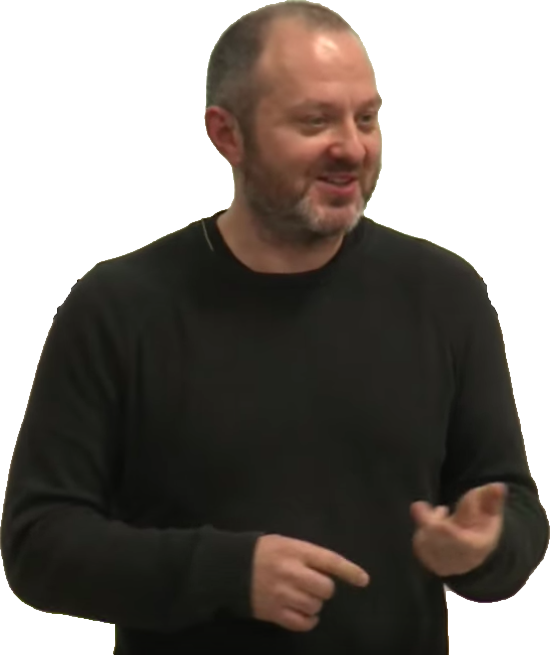
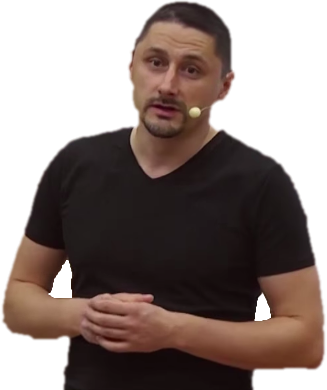
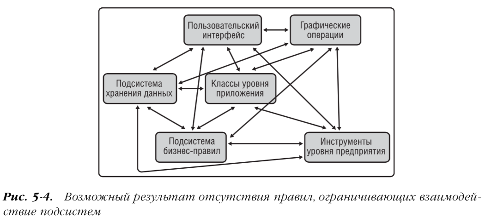
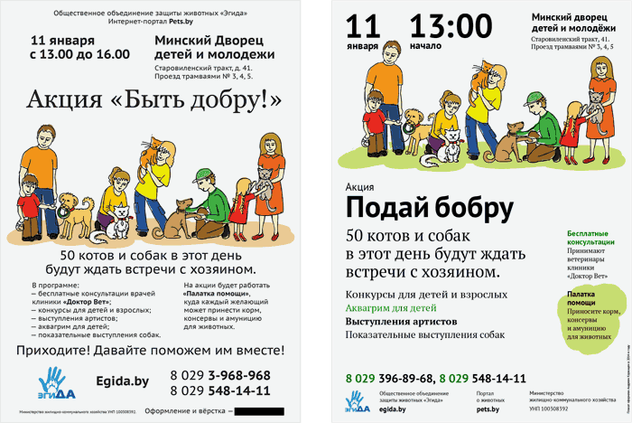
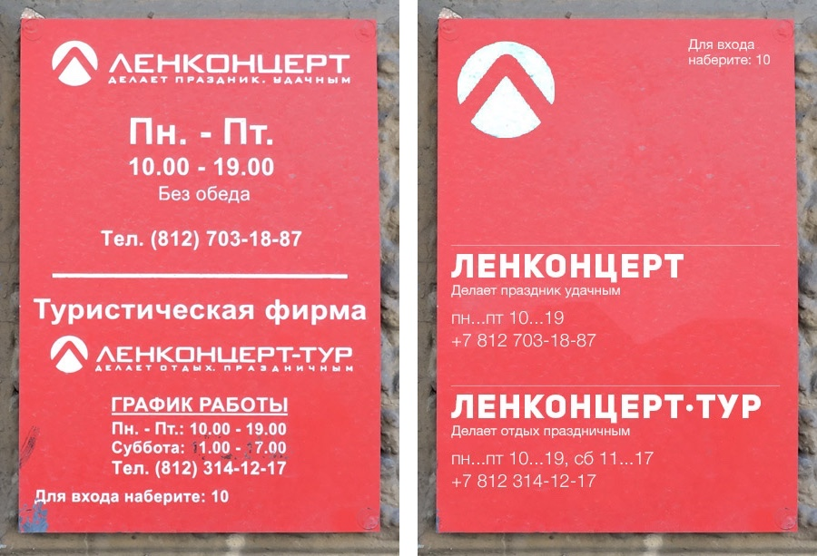

телс.олеж.ес 🏄♀️
Дороу. А тут просто хорошие ссылки.
Но интересные они для меня, а мы с тобой разные, между нами пропасть. Поэтому для каждой ссылки написана её польза.
So, ты можешь не терять время зря и найти то, что займет и тебя.
Главы, которые помогают...
Жить 🔥Общаться 🌚🌝Творить 🐶Сделать 🔫 — основноеПисать 📔Кодить 💾Дизайнить 🖼 — навыки
Решать 🎆Быть здоровее 🥝Планировать 🚦 — дополнительное
Засесть 🍹Побалдеть 🔈
Жить 🔥 Это глава. В ней три раздела.
Для начала, речи-батарейки: |
|
|

Как устроить свою работу, чтобы было интересно — лекция Людвига Быстроновского. (не работу на самом деле) |
Раскрывает две идеи:
|
| Вы получите то, что возьмете — пост Ильяхова. |
«Успех зависит не от исходных данных, а от того, куда ты двигаешься. Это одинаково верно в карьере, личной жизни, увлечениях и чем угодно еще. У вас будет только то, что вы сами возьмете. Мы намеренно сделали первую ступень Школы редакторов тяжелой. Здесь никто не кормит вас с ложечки готовыми ответами. Не сдал тест вовремя — упал в рейтинге. Ответил неправильно — сам ищешь правильный ответ. Не хочешь заниматься — не занимаешься. Задания делаешь для себя. Нужно, чтобы тебя проверили — сам идешь и просишь проверить.» |
Когда все валится из рук, а другие продолжают всего добиваться. Обидно(
|
|
| Ты не один — пост из Cоли Людвига. | Что делать, когда в голове лишь мысли «Смотри, ты плохо стараешься», «Опять у тебя ничего толком не получится» и «Ну вот, опять ты ничего не успел сделать, я же говорил». Одним словом, когда гроб гроб кладбище сомнения( |
| -30: Время и вина — пост из ЖЖ Людвига. |
Автор рассказывает, как он винил себя за факапы, расстраивался и ничего не делал в итоге. Пост про то, как все-таки что-то делать. |
| Недиван — цикл писем и прикольный сайтик. |
«Бывают сверхлюди. Они делают правильные вещи. А бывают другие люди, люди-тряпки. Они тоже делают правильные вещи, но когда-нибудь потом.» Это эксперимент в прямом эфире, где автор от своего лица разбирается в себе. Цель рассылки — помочь читателям выработать собственные трюки для дизайна себя. |
|
Делай как крутой — пост из бложика одной редакторши.
(Главная лекторочья тайна — похожий пост) |
Ирина пишет, как она попробовала не бояться обломаться и смогла. |
В общем, как быть дальше: |
|
|

36 — доклад с Яндексовой конференции.
+ дополнение (с 1:20:00) |
Вадим рассказывает слушающим в районе 20–30 лет:
|
| Про счастье — почти рецепты — расшифровка записи подкаста. | Как жить: не считать, что вам кто-то обязан; не заниматься тем, что не нравится делать; не страдать по ерунде. И что самое главное — быть честным. |
| Семь навыков высокоэффективных людей — книжка Стивена Кови. |
Учит:
|
Общаться 🌚🌝
Как разговаривать приятнее: |
|
| очень простое открытие — из жэжэшечки. |
«люди не любят смешанные сигналы»
или «велик соблазн -- по крайней мере, на первых порах -- снизить эмоциональный накал сообщения, назвать человека не пиздец каким умным, а, допустим, довольно умным или соорудить такую смысловую конструкцию, которую можно трактовать и так, и эдак. дескать, я тебя, может, и похвалил, а, может, и хуй». |
| Как приобретать друзей и оказывать влияние на людей — книга Дейла Карнеги. |
Карнеги написал много хороших мыслей. Я время от времени перечитываю книжку, и на каждый раз нахожу в своих воспоминаниях кучу моментов, когда можно было мне поступить по-другому и сделать все лучше. Некоторые темы:
|
| Улыбнись :) | |
Как укрепить отношения: |
|
| Все сложно: Как спасти отношения, если вы рассержены, обижены или в отчаянии — книга Харриет Лёрнер. | Учит эмпатии. |
| Хочу сказать что 90% ваших ебучих проблем из-за того, что вы друг с другом не разговариваете — @S_a_a_l_t | |
Как общаться продуктивнее: |
|
| Три закона критики — текст Ильяхова. |
Проблема: критика — это неприятно, когда она сформулирована как личное оскорбление. Такая критика не достигает полезного действия, из-за нее портятся отношения и репутация. Пост о том, как нести пользу. |
| Читательские границы — ещё текст Ильяхова. | «Старайтесь не писать о том, что касается желаний, воли, страхов и решений вашего читателя — в общем, обо всём, что происходит в его голове. Особенно в формате «Вы думаете так», «Вы хотите так», «Вы решаете так». Если вы неточно попадёте в его мысли, читатель почувствует манипуляцию, а вы лишитесь доверия.» |
| Главный творческий принцип — сообщение из телеграм канала Лебедева. | «Не нужно пытаться понравиться.» |
| Джим Кэмп. «Сначала скажите „нет”». Отказаться от нужды — пост Ирины Усиченко. | А это объясняет принципиальное (ну как обычно) высказывание Тёмы выше. |
| Книга Джима Кемпа «Сначала скажите „нет“» — пост Ильи Бирмана. | Что за книжка такая Кемпа? |
| Начитаются Кемпами и травят леску за гаражами — пост Максима Ильяхова. |
Этот пост уже вне этой цепочки ссылок, но тоже про «Сначала скажите „нет“». Тут Ильяхов рассказывает, как не нужно потупому следовать Кемпу. |
| Как быть классным — видео с ютюб канала «Культура работы». |
Спойлер: расширяем зону ответственности. |
| Про управление временем и задачами — видео с ютюб канала «Культура работы». |
Как ваши дела влияют на других людей в команде; когда говорить, что ты не успеваешь с задачей; и как разделить одну галлюцинацию на двоих. |
Творить 🐶
Как учиться делать крутые штуки: |
|
|
Делись
|
Для примера возьмем этот сайт. Вообще его смысл чтобы поперемешивать свои и чужие мысли. Чему я учусь делясь сейчас:
Расскажу историю: Вот была первая версия сайта, где были просто ссылки списком. Сделал. Показал. Большинство друзей отнеслись прохладно. Хммм. (((suspicious))) Стал думать почему. Попытался представить другими глазами. Что-то подумал-подумал и придумалась другая идея. Реализовал. Уже зашло. А потом я пересматриваю через неделю, и вроде то, что людям похоже понравилось, уже не нравится мне. Исправляю текст. Так потихоньку догадываюсь, как делать лучше. И это постоянно: пожил такой ещё на планете Земля какое-то время, наувидел разного, и когда открываешь заново сайт, то замечаешь, ох, там-сям, черт возьми, так скучно написано, нельзя же так. Или ещё лучше, если какой-то новый знакомый увидит все это и выкрикнет «фе», и заставит тебя посмотреть на всё с другого угла. So, делясь, ты выставляешь свою работу на всеобщую критику, и это круто тем, что оно ускоряет твое развитие. |
| Принципы — пост Артемия Лебедева. |
Пост (и ссылка внутри него) про то, что без принципов и ограничений творческий процесс не зажжется.
— Вы согласны поработать над дизайном для нас за очень много денег? — Да, это честь для меня. — У нас есть условие: мы не хотим никак вас ограничивать. — Это потрясающе, именно о таком заказчике я и мечтал. Всю жизнь меня мучили ограничениями и теперь... — Позвольте перебить вас. — Да, да, конечно, слушаю. — Сделайте нам самый лучший на свете дизайн. — Дизайн чего? — Наше условие — отсутствие ограничений. — Ааа... эээ... ммм... |
{kind=link}
Сделать 🔫
Как делать качественно: |
|||||||||
| Кодекс бюрошника — из советов Бюро. |
11 принципов работы в Дизайн-бюро Артёма Горбунова. Например, первый: «В дизайне, проектах, управлении людьми, карьере, образовании и даже в личной жизни бюрошник руководствуется центральным понятием пользы. Человек — социальное существо. Он получает материальное и моральное вознаграждение от других людей только одним из трёх способов:
насильственным,
паразитическим, принося пользу и уменьшая вред другим людям. По этим трём сценариям построены все виды человеческих отношений: предпринимательство, наука и техника, экономика, политика, семья, и, конечно, дизайн. Бюрошник сознательно выбирает для себя путь пользы. Свои решения в дизайне, проектах, делегировании полномочий, образовании и карьере он принимает, исходя из желания постоянно увеличивать собственное полезное действие, то есть ценность для мира. Это не означает, что бюрошник — слепой альтруист. Свой путь он выбирает в соответствии с личными интересами и предпочтениями, заботится о себе и своей семье.» |
||||||||
| Что значит «сделать» — ЖЖ. | Взбадривающий пост про то, что «сделать» — это значит «сдать». | ||||||||
Как доводить до конца: |
|||||||||
| Метод прогрессивного джипега — глава из «Ководства». |
У меня было такое, что сидишь либо пишешь текст, либо кодишь и сильно заморачиваешься на каком-то куске работы, вылизываешь его до идеального состояния, что не успеваешь хорошо сделать всё остальное. Тёма предлагает делать наоборот: сделать каждый кусок работы быстро по-простому, а потом в цикле возвращаться-возвращаться и долизывать. |
||||||||
|
Как флексить — совет Бюро. Как не флексить — совет Бюро. |
Проект — это путешествие из точки «А» («Нет сайта») в воображаемую точку «Б» («Начались продажи с сайта»). На пути заказчик и исполнитель столкнутся с сопротивлением окружающей среды: дизайнер заболеет, юристы запретят новый слоган, программисты потребуют больше денег, обрушится база данных, изменится рынок. Что-то всегда происходит. Наивно думать, что проект пойдет по плану. План всегда описывает идеальную ситуацию. Никто в здравом уме не напишет в плане «А вот здесь у нас заболеет дизайнер», «А тут вы захотите все переделать». Менеджер приносит клиенту сказочный план, в котором все соблюдают сроки, а макеты согласовываются с первого раза. И этот заведомо сказочный план попадает в договор и смету. |
||||||||
|
Работать короткими итерациями.
|
|||||||||
Как делать что-то хорошее: |
|||||||||
| Getting Real (pdf) — книга ребят из 37signals. | Эта статья на Хабре лучше расскажет. | ||||||||
| Rework — книга ребят из 37signals. |
Rework shows you a better, faster, easier way to succeed in business. Most business books give you the same old advice: Write a business plan, study the competition, seek investors, yadda yadda. If you're looking for a book like that, put this one back on the shelf. Read it and you'll know why plans are actually harmful, why you don't need outside investors, and why you're better off ignoring the competition. The truth is, you need less than you think. You don't need to be a workaholic. You don't need to staff up. You don't need to waste time on paperwork or meetings. You don't even need an office. Those are all just excuses. What you really need to do is stop talking and start working. This book shows you the way. You'll learn how to be more productive, how to get exposure without breaking the bank, and tons more counterintuitive ideas that will inspire and provoke you. With its straightforward language and easy-is-better approach, Rework is the perfect playbook for anyone who’s ever dreamed of doing it on their own. Hardcore entrepreneurs, small-business owners, people stuck in day jobs they hate, victims of "downsizing," and artists who don’t want to starve anymore will all find valuable guidance in these pages. |
||||||||
Писать 📔
Как структуировать понятнее: |
|||||||||||||
| Делайте вывод |
В очередном заплыве среди домашек Продвинутого курса Главреда нашел (Ильяхов нашел) системную проблему у тех, кто пишет о себе. Проблема в том, что люди перечисляют факты, но не делают выводы. Из-за этого посторонний читатель не понимает, к чему эти факты:
⏺ Работала координатором выставок в галерее современного искусства, пресс-секретарем и контент-редактором в сети бутиков, как
фрилансер сотрудничала с изданиями по дизайну интерьеров и отдельными дизайнерами, сейчас являюсь редактором сайта образовательной
компании.
Это просто перечисление предыдущих мест работы. Здесь не хватает ответа на вопрос «Что мне из этого вынести?» — то есть вывода. Причем в нашем случае вывод может быть и в конце, и в начале: 1️⃣ Разбираюсь в искусстве, моде и образовании. Работала координатором выставок в галерее современного искусства, пресс-секретарем и контент-редактором в сети бутиков... сейчас работаю редактором в образовательной компании. 2️⃣ Работала координатором выставок в галерее современного искусства, пресс-секретарем и контент-редактором в сети бутиков... сейчас работаю редактором в образовательной компании. Поэтому я свободно чувствую себя в теме искусства, моды и образования. Полезно войти в ментальное состояние новичка: представить себе, что ты ничего вообще не знаешь об этой теме, тебе нужно все объяснять. Поймешь ты свой собственный текст или нет? |
||||||||||||
| Как раскрыть мысль |
|
||||||||||||
| Текстовая гигиена |
О чемКак редактировать текст, чтобы его было не впадлу читать. Что я понял главноеСтавьте заголовки, ребята. Заголовки. Заголовки! Что стоит делать ещёРежьте текст на мелкие абзацы, чтобы было видно где конец то. |
||||||||||||
Как писать интереснее: |
|||||||||||||
| Сила примера |
Проверяю (Ильяхов проверяет) домашки продвинутого курса, встречаю такой фрагмент. Автор пишет о своих навыках:
1️⃣ Приведу на сайт читателей — найду, отредактирую и опубликую важные отраслевые новости, возьму интервью у экспертов рынка,
напишу обзор. 2️⃣ Разработаю концепцию сайта и рубрикатор, наполню контентом.
Вроде хорошо: факты есть, правда есть, — но все равно текст абстрактный. Абстрактный он потому, что не опирается на чувственный опыт. «Важные отраслевые новости» и «концепция сайта» — абстрактно, даже если ты в этом варишься. См. также: чувственный опыт Чтобы исправить ситуацию, достаточно к каждой абстракции привести пример: 1️⃣ Приведу на сайт читателей — найду, отредактирую и опубликую важные отраслевые новости, возьму интервью у экспертов рынка, напишу обзор. Если из Третьяковки выкрадут «Черный квадрат», я возьму интервью у похитителя. 2️⃣ Разработаю концепцию сайта и рубрикатор, наполню контентом. Если вы хотите создать СМИ об искусстве и культуре и сегодня у вас ничего нет — дайте мне дизайнера, двоих разработчиков и полмиллиона рублей. Через три месяца у вас будет СМИ, а через полгода на нем можно будет продавать рекламу. |
||||||||||||
| Ситуация из жизни |
Вот текст о продукте:
1️⃣ Кафе «Василек» предлагает широкий выбор изысканных блюд русской и европейской кухни. Помимо регулярного обслуживания организуем
банкеты, праздники, юбилеи для компаний не более 20 человек. Действуют спецпредложения на завтрак и бизнес-ланч.
Здесь читатель должен сам догадаться, когда ему приходить в кафе «Василек». Попробуем проделать эту работу за него: 1️⃣ Кафе «Василек» кормит завтраками и обедами жителей Ломоносовского района и их гостей. По утрам к нам приходят, чтобы взять с собой кофе, свежую выпечку. Студенты МГУ прогуливают у нас первую и вторую пару: у нас работает вайфай, есть где сесть с компьютером, а до 12 скидки на кофе и завтраки. У нас отмечают дни рождения и юбилеи семейным кругом: в общем зале за общим столом комфортно усаживаются 15—20 человек. Мы приготовим, накроем и уберем, от вас — прийти и развлекаться. На банкеты можно со своим алкоголем, если хотите сэкономить. На ланч к нам приходят сотрудники местных бизнес-центров, аспиранты и профессора МГУ. Мы обновляем меню бизнес-ланчей каждые два месяца, чтобы они не скучали. Понятно, что в кафе ходят не потому, что «на сайте так написано». Все нормальные люди ходят в кафе, потому что оно удобно расположено, вкусно кормит и после него не травишься. Но если уж очень захотелось сделать сайт, то пусть там будет что-то про жизнь людей, а не про продукт. |
||||||||||||
| Создать доверие и убедить |
Оля и Аня открыли свадебные агентства. Оля для своего сайта наняла копирайтера, а Аня написала текст сама. У Оли получился стандартный водный текст без любви к смыслу:
1️⃣ Наши организаторы учтут все детали, чтобы Ваш праздник оказался по-настоящему незабываемым и неповторимым! Доверьтесь профессионалам,
чтобы Ваша свадьба запомнилась Вам на всю жизнь! Мы — профессионалы своего дела и знаем все тонкости организации и проведения
свадьбы, поэтому предусмотрим все возможные нюансы...
А Аня написала текст с любовью и знанием дела. Получилось убедительно:
1️⃣ Мы делаем так, чтобы для вас свадьба стала волшебным и приятным днем. А мы позаботимся о том, чтобы машина приехала вовремя,
площадку украсили заранее, гости были в хорошем настроении, а развлечения подошли и взрослым, и детям. Мы умеем привести
жениха в чувство после мальчишника и доставить невесту к алтарю сквозь пробки. Мы знаем, что делать с разгулявшимся родственником,
как договориться с полицией и как спасти праздник, если вдруг в зале отключили свет...
Секрет убедительного текста — в знании дела. Наполните его подробностями, которые покажут, что вы понимаете тонкости. Покажите, что знаете проблемы читателя и умеете их решать. |
||||||||||||
| Лейтмотив |
Лейтмотив — это то, чем статья отличается от всех остальных на эту же тему. Вот пример обычной такой статьи без лейтмотива:
1️⃣ Как накачать мышцы:
1. Купите абонемент в спортзал 2. Тренируйтесь 2–3 раза в неделю. 3. Ешьте 5–6 раз в день. Больше белка! 4. Спите 8–9 часов в день. В этой статье все будет правильно: логичная структура, правильные советы. Вот только жизни в такой статье нет. Добавим в текст жизни и введем лейтмотив «если вы бедный студент»:
1️⃣ Как накачать мышцы, если вы бедный студент:
1. Как найти дешевый зал. Бесплатные первые визиты. 2. Как найти время на тренировки между парами 3. Как питаться на 500 рублей в неделю. 4. Как уснуть в общаге. Лейтмотив нужен редактору, чтобы сплотить статью. Бывает такое: все логично, советы правильные, но статья не склеивается. Нет какого-то связующего элемента. |
||||||||||||
| Людям интересны люди | Дополнительное чтение. | ||||||||||||
| Писателям: чему учиться у Людвига | |||||||||||||
Как добавить энергии: |
|||||||||||||
| Синтаксис и энергичные предложения |
У энергичного предложения должна быть сильная грамматическая основа: подлежащее и сказуемое. Сильное подлежащее — это существительное-субъект. Субъект — это то, что может совершать действие.
Сильное сказуемое — это глагол, который обозначает действие.
Когда в предложении встречается существительное-субъект и глагол действия, появляется энергия. |
||||||||||||
| Составное глагольное сказуемое |
|
||||||||||||
Чем дальше зачитаться: |
|||||||||||||
| Советы Главреда |
Советы и статьи о тексте, редактуре, информационном стиле и рекламе. Помогают дизайнерам, разработчикам, писателям и редакторам создавать сильный текст. |
||||||||||||
Кодить 💾
Как разрабатывать расширяемую архитектуру и просто не говнокодить: |
|
| S.O.L.I.D-ный JavaScript |
Доклад про то, как на практике использовать SOLID, чтобы можно было переиспользовать код и чтобы ничего не разваливалось при изменениях кодобазы.

|
| refactoring.guru | Сайт, на котором рассказано про все запахи кода, рефакторинги, паттерны и т.д. |
Дизайнить 🖼
Как делать аккуратнее: |
|
| Why is Vertical Rhythm an Important Typography Practice? |

|
| basehold.it | Разлиновывает страницу одной css'кой, чтобы было проще выравнивать под ритм. |
| Прицип модульности |  |
| Прямоугольнее |  |
Решать 🎆
Какими принципами: |
|
| keep things simple | Ну вправду делайте проще. ┬─┬ ノ( ゜-゜ノ) |
Как меньше ошибаться: |
|
| Подтверждающее искажение: взгляд во тьму |
«Однажды, проводя занятие у студентов, я выписал на доске три числа: 2-4-6. „Я загадал правило, — сказал я, — которому подчиняются последовательности трех чисел. Данная последовательность подходит под это правило. Каждый из вас найдет у себя на парте листы бумаги. Выпишите последовательность трех чисел на карточке, а я в зависимости от того, подходит ли последовательность под правило, напишу на листе „да“ или „нет“. Это можно повторять до тех пор, пока вы не будете уверены, что угадали правило. После этого вы должны записать правило внизу листа“. Вот последовательность предположений одного из студентов: 4, 6, 2 — нет 4, 6, 8 — да 10, 12, 14 — да После этого студент записал свою версию правила. Как вы думаете, что он написал? Исследование называлось „On the failure to eliminate hypotheses in a conceptual task“. Испытуемые, которым предлагалась задача „2-4-6“, обычно пытались придумать положительные примеры, а не негативные — они применяли гипотетическое правило для создания триплета, а потом смотрели, будет ли он отмечен как „да“. Таким образом, кто-то, кто формирует гипотезу «числа, каждое из которых больше предыдущего на два», тестирует триплет 8-10-12, видит, что подходит и уверенно объявляет свое правило. Кто-то, кто формирует гипотезу Х-2Х-3Х, тестирует триплет 3-6-9, обнаруживает, что триплет подходит, и тоже объявит правило. В каждом из этих случаев настоящее правило одно и то же: три любых числа в порядке возрастания. Однако, чтобы додуматься до этого, вы должны придумывать триплеты, которые не должны быть правильными, такие как 20-23-26 и проверять, будут ли они отмечены как „нет“. Что люди обычно не склонны делать в этом эксперименте. В некоторых случаях испытуемые изобретают, «тестируют» и объявляют правила куда более сложные, чем настоящий ответ. Вы должны искать негативные примеры вместо положительных, смотреть на ноль, а не на единицу; что, как показал эксперимент, идет вразрез с человеческим инстинктом. Некоторое время назад я писал, что сила гипотезы определяется тем, что она не может объяснить, а не тем что может — если вы одинаково легко объясняете любой исход, то у вас ноль знаний. Так, чтобы указать на то, что объяснение не является полезным, недостаточно задуматься над тем, что оно может объяснить хорошо — вам нужно также искать результаты, которые нельзя объяснить, это и будет истинной силой теории.» |
Как правильно оценивать свои силы: |
|
| Эффект Даннинга-Крюгера |
Когнитивное искажение, которое заключается в том, что люди, имеющие низкий уровень квалификации, делают ошибочные выводы, принимают неудачные решения и при этом неспособны осознавать свои ошибки в силу низкого уровня своей квалификации. В то время как действительно высококвалифицированные люди, наоборот, склонны занижать оценку своих способностей и страдать недостаточной уверенностью в своих силах, считая других более компетентными. |
Быть здоровее 🥝
| 5 минут |
11-минутное яндексовое выступление про 5 минут. Вадим рассказывает о том, как не поставить крест на своей любимой работе и не потерять ее.
|
Планировать 🚦
| WorkFlowy |
Гениально простая тулза для хранения списков. Использую её сам чтобы хранить планы, записывать во время обсуждений на встречах и вести дневнички. Идея простая — можно создавать бесконечно вложенные списки и фокусироваться на какой-то из веток. На сайтике есть кнопочка "Try it out", которая даёт сразу вживую потыкать сервис. |
| GTD за 2 минуты | Одним словом, просто выписывайте все из головы хоть куда-нить: на листок бумаги, в заметку на телефоне или в мессенджер. |
Засесть 🍹
|
Побалдеть 🔈
|